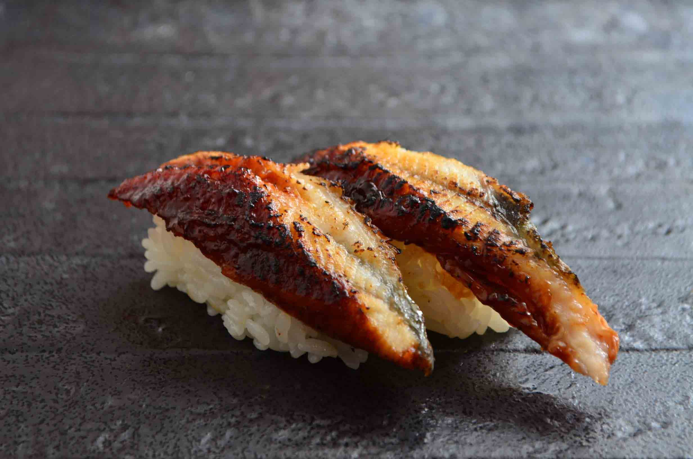

Nigiri sushi
In Nemuro Hanamaru, only the fresh fish be used. It's also the secret why the sushi in Nemuro Hanamaru is good.
Salmon
Very popular sushi around world.
Tuna
The famous sushi in japan. Many people like tuna because of the flavor.
Scallop
The sushi made by scallop. Very popular item, and many people like this.
Seared sushi
Using the fire to seared the sushi. Make the sushi be much delicious.
By seared process, the home-made soysauce with release tons of flavor into sushi. Make sushi different.

Seared salmon
The salmon with home-made soysauce. The best seared sushi in Nemuro Hanamaru.

Roasteel
Traditional japanese sushi. Very delicious.